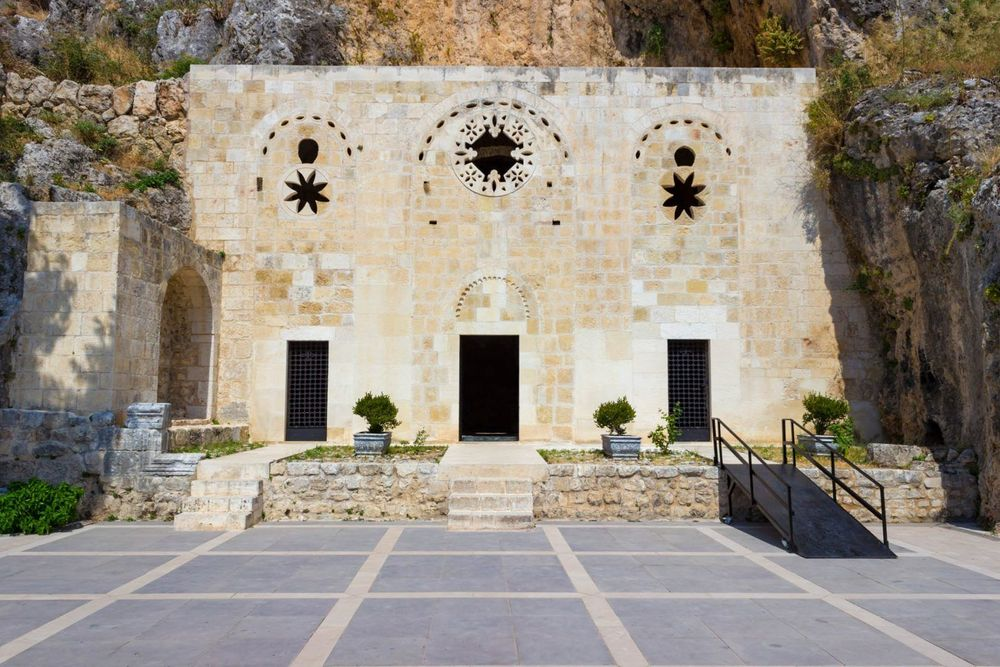

Turkey is actually in two continents!
The Grotto of St Peter outside Antioch (now known as
Antakya) is believed to have been created by Jesus' disciple Simon
Peter. This makes it the oldest place of Christian worship
in the world. You can still visit the church and see the traces
of ancient decoration today.
